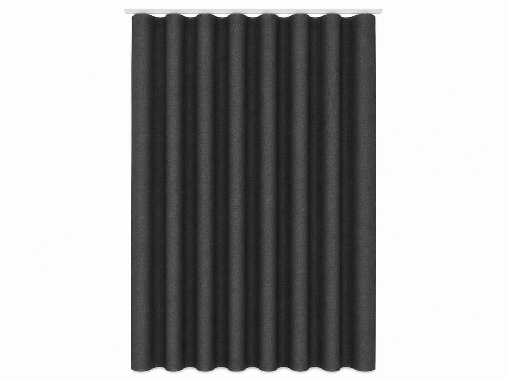
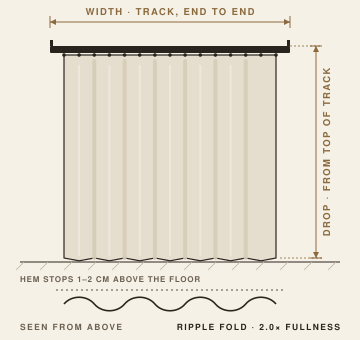

Custom ripple fold curtains, one even wave.
Flat cloth with snap tape along the top, clipped to carriers spaced on a cord inside a dedicated track. The spacing forces the cloth into a continuous S-shaped wave that runs evenly from top to hem. Modern, very even, and it stacks back neatly across a wide run of glass.


- Fullness
- About 2×, set by the carrier spacing.
- Hangs on
- A ripple fold track only. It cannot go on an ordinary pole.
- Made
- Cut in one piece from cloth up to 360 cm wide, so a floor-to-ceiling wave has no seam across the face.
Any of the ninety-nine, cut to your window.
Every heading is made in every cloth: forty-six sheers, fifty-three drapes, and blackout curtains or any drape blackout-lined. Priced by the cloth the curtain takes, with the duty and the freight to the USA inside the figure. Pinch pleat or ripple fold?
Other headings: Pinch pleat · Grommet · Rod pocket · all nine on the bench.
Can ripple fold curtains hang on a normal curtain pole?
No. Ripple fold relies on carriers spaced inside a dedicated track. On a pole it is the wrong heading.
Is ripple fold more expensive than pinch pleat?
The cloth needed is similar, around 2× fullness for both. Ripple fold needs its own track system, which is usually the larger cost difference.
How much cloth does a curtain take?
Fullness is the ratio of cloth to track. At 2.0× a 100-inch track takes 200 inches of fabric. Under about 1.5× a curtain looks thin when it is closed, however good the cloth is.
Is there a minimum order?
No. One window is an order, for private and trade customers alike.
Can I get samples first?
Yes. Samples are free, including the postage, anywhere we ship. Write to info@curtainia.com with the cloth names and your address.
Do you ship ripple fold curtains to the United States and the UK?
Yes. To the USA we ship delivered duty paid, so the import duty is inside the quoted price. We also export to the UK, the EU and worldwide, quoted delivered per country.
Sheer curtains · Drapes · Blackout curtains · Pinch pleat · Ripple fold · Grommet · Rod pocket · Roller blinds · the whole library